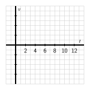

How is the average velocity of a moving object connected to the values of its position function?
How do we interpret the average velocity of an object geometrically on the graph of its position function?
How is the notion of instantaneous velocity connected to average velocity?
Calculus can be viewed broadly as the study of change. A natural and important question to ask about any changing quantity is “how fast is the quantity changing?”
We begin with a simple problem: a ball is tossed straight up in the air. How is the ball moving? Questions like this one are central to our study of differential calculus.
Preview Activity1.1.1.
Suppose that the height \(s\) of a ball at time \(t\) (in seconds) is given in feet by the formula \(s(t) = 64 - 16(t-1)^2\text{.}\)
Construct a graph of \(y = s(t)\) on the time interval \(0 \le t \le 3\text{.}\) Label at least six distinct points on the graph, including the three points showing when the ball was released, when the ball reaches its highest point, and when the ball lands.
Describe the behavior of the ball on the time interval \(0 \lt t \lt 1\) and on time interval \(1 \lt t \lt 3\text{.}\) What occurs at the instant \(t = 1\text{?}\)
Compute the value of \(AV_{[0.5,1]}\text{.}\) What does this value measure on the graph? What does this value tell us about the motion of the ball? In particular, what are the units on \(AV_{[0.5,1]}\text{?}\)
Subsection1.1.1Position and average velocity
Any moving object has a position that can be considered a function of time. When the motion is along a straight line, the position is given by a single variable, which we denote by \(s(t)\text{.}\) For example, \(s(t)\) might give the mile marker of a car traveling on a straight highway at time \(t\) in hours. Similarly, the function \(s\) described in Preview Activity 1.1.1 is a position function, where position is measured vertically relative to the ground.
On any time interval, a moving object also has an average velocity. For example, to compute a car's average velocity we divide the number of miles traveled by the time elapsed, which gives the velocity in miles per hour. Similarly, the value of \(AV_{[0.5,1]}\) in Preview Activity 1.1.1 gave the average velocity of the ball on the time interval \([0.5,1]\text{,}\) measured in feet per second.
In general, we make the following definition:
Average Velocity.
For an object moving in a straight line with position function \(s(t)\text{,}\) the average velocity of the object on the interval from \(t = a\) to \(t = b\), denoted \(AV_{[a,b]}\text{,}\) is given by the formula
Note well: the units on \(AV_{[a,b]}\) are “units of \(s\) per unit of \(t\text{,}\)” such as “miles per hour” or “feet per second.”
Activity1.1.2.
The following questions concern the position function given by \(s(t) = 64 - 16(t-1)^2\text{,}\) considered in Preview Activity 1.1.1.
Compute the average velocity of the ball on each of the following time intervals: \([0.4,0.8]\text{,}\) \([0.7,0.8]\text{,}\) \([0.79, 0.8]\text{,}\) \([0.799,0.8]\text{,}\) \([0.8,1.2]\text{,}\) \([0.8,0.9]\text{,}\) \([0.8,0.81]\text{,}\) \([0.8,0.801]\text{.}\) Include units for each value.
On the graph provided in Figure 1.1.1, sketch the line that passes through the points \(A=(0.4, s(0.4))\) and \(B=(0.8, s(0.8))\text{.}\) What is the meaning of the slope of this line? In light of this meaning, what is a geometric way to interpret each of the values computed in the preceding question?
Use a graphing utility to plot the graph of \(s(t) = 64 - 16(t-1)^2\) on an interval containing the value \(t = 0.8\text{.}\) Then, zoom in repeatedly on the point \((0.8, s(0.8))\text{.}\) What do you observe about how the graph appears as you view it more and more closely?
What do you conjecture is the velocity of the ball at the instant \(t = 0.8\text{?}\) Why?
Figure1.1.1.A partial plot of \(s(t) = 64 - 16(t-1)^2\text{.}\)
Subsection1.1.2Instantaneous Velocity
Whether we are driving a car, riding a bike, or throwing a ball, we have an intuitive sense that a moving object has a velocity at any given moment -- a number that measures how fast the object is moving right now. For instance, a car's speedometer tells the driver the car's velocity at any given instant. In fact, the velocity on a speedometer is really an average velocity that is computed over a very small time interval. If we let the time interval over which average velocity is computed become shorter and shorter, we can progress from average velocity to instantaneous velocity.
Informally, we define the instantaneous velocity of a moving object at time \(t = a\) to be the value that the average velocity approaches as we take smaller and smaller intervals of time containing \(t = a\text{.}\) We will develop a more formal definition of instantaneous velocity soon, and this definition will be the foundation of much of our work in calculus. For now, it is fine to think of instantaneous velocity as follows: take average velocities on smaller and smaller time intervals around a specific point. If those average velocities approach a single number, then that number will be the instantaneous velocity at that point.
Activity1.1.3.
Each of the following questions concern \(s(t) = 64 - 16(t-1)^2\text{,}\) the position function from Preview Activity 1.1.1.
Compute the average velocity of the ball on the time interval \([1.5,2]\text{.}\) What is different between this value and the average velocity on the interval \([0,0.5]\text{?}\)
Use appropriate computing technology to estimate the instantaneous velocity of the ball at \(t = 1.5\text{.}\) Likewise, estimate the instantaneous velocity of the ball at \(t = 2\text{.}\) Which value is greater?
How is the sign of the instantaneous velocity of the ball related to its behavior at a given point in time? That is, what does positive instantaneous velocity tell you the ball is doing? Negative instantaneous velocity?
Without doing any computations, what do you expect to be the instantaneous velocity of the ball at \(t = 1\text{?}\) Why?
At this point we have started to see a close connection between average velocity and instantaneous velocity. Each is connected not only to the physical behavior of the moving object but also to the geometric behavior of the graph of the position function. We are interested in computing average velocities on the interval \([a,b]\) for smaller and smaller intervals. In order to make the link between average and instantaneous velocity more formal, think of the value \(b\) as \(b = a + h\text{,}\) where \(h\) is a small (non-zero) number that is allowed to vary. Then the average velocity of the object on the interval \([a,a+h]\) is
with the denominator being simply \(h\) because \((a+h) - a = h\text{.}\) Note that when \(h \lt 0\text{,}\) \(AV_{[a,a+h]}\) measures the average velocity on the interval \([a+h,a]\text{.}\)
To find the instantaneous velocity at \(t = a\text{,}\) we investigate what happens as the value of \(h\) approaches zero.
Example1.1.2.Computing instantaneous velocity for a falling ball.
The position function for a falling ball is given by \(s(t) = 16 - 16t^2\) (where \(s\) is measured in feet and \(t\) in seconds).
Find an expression for the average velocity of the ball on a time interval of the form \([0.5, 0.5+h]\) where \(-0.5 \lt h \lt 0.5\) and \(h \ne 0\text{.}\)
Use this expression to compute the average velocity on \([0.5,0.75]\) and \([0.4,0.5]\text{.}\)
Make a conjecture about the instantaneous velocity at \(t = 0.5\text{.}\)
We make the assumptions that \(-0.5 \lt h \lt 0.5\) and \(h \ne 0\) because \(h\) cannot be zero (otherwise there is no interval on which to compute average velocity) and because the function only makes sense on the time interval \(0 \le t \le 1\text{,}\) as this is the duration of time during which the ball is falling. We want to compute and simplify
At this point, we note two things: first, the expression for average velocity clearly depends on \(h\text{,}\) which it must, since as \(h\) changes the average velocity will change. Further, we note that since \(h\) can never equal zero, we may remove the common factor of \(h\) from the numerator and denominator. It follows that
From this expression we can compute the average for any small positive or negative value of \(h\text{.}\) For instance, to obtain the average velocity on \([0.5,0.75]\text{,}\) we let \(h = 0.25\text{,}\) and the average velocity is \(-16 - 16(0.25) = -20\) ft/sec. To get the average velocity on \([0.4, 0.5]\text{,}\) we let \(h = -0.1\text{,}\) and compute the average velocity as
We can even explore what happens to \(AV_{[0.5, 0.5+h]}\) as \(h\) gets closer and closer to zero. As \(h\) approaches zero, \(-16h\) will also approach zero, so it appears that the instantaneous velocity of the ball at \(t = 0.5\) should be \(-16\) ft/sec.
Activity1.1.4.
For the function given by \(s(t) = 64 - 16(t-1)^2\) from Preview Activity 1.1.1, find the most simplified expression you can for the average velocity of the ball on the interval \([2, 2+h]\text{.}\) Use your result to compute the average velocity on \([1.5,2]\) and to estimate the instantaneous velocity at \(t = 2\text{.}\) Finally, compare your earlier work in Activity 1.1.3.
Subsection1.1.3Summary
For an object moving in a straight line with position function \(s(t)\text{,}\) the average velocity of the object on the interval from \(t = a\) to \(t = b\), denoted \(AV_{[a,b]}\text{,}\) is given by the formula
The average velocity on \([a,b]\) can be viewed geometrically as the slope of the line between the points \((a,s(a))\) and \((b,s(b))\) on the graph of \(y = s(t)\text{,}\) as shown in Figure 1.1.3.
Figure1.1.3.The graph of position function \(s\) together with the line through \((a,s(a))\) and \((b,s(b))\) whose slope is \(m = \frac{s(b)-s(a)}{b-a}\text{.}\) The line's slope is the average rate of change of \(s\) on the interval \([a,b]\text{.}\)
Given a moving object whose position at time \(t\) is given by a function \(s\text{,}\) the average velocity of the object on the time interval \([a,b]\) is given by \(AV_{[a,b]} = \frac{s(b) - s(a)}{b-a}\text{.}\) Viewing the interval \([a,b]\) as having the form \([a,a+h]\text{,}\) we equivalently compute average velocity by the formula \(AV_{[a,a+h]} = \frac{s(a+h) - s(a)}{h}\text{.}\)
The instantaneous velocity of a moving object at a fixed time is estimated by considering average velocities on shorter and shorter time intervals that contain the instant of interest.
Exercises1.1.4Exercises
1.Average velocity from position.
2.Rate of calorie consumption.
3.Average rate of change - quadratic function.
4.Comparing average rate of change of two functions.
5.Matching a distance graph to velocity.
6.
A bungee jumper dives from a tower at time \(t=0\text{.}\) Her height \(h\) (measured in feet) at time \(t\) (in seconds) is given by the graph in Figure 1.1.4. In this problem, you may base your answers on estimates from the graph or use the fact that the jumper's height function is given by \(s(t) = 100\cos(0.75t) \cdot e^{-0.2t}+100\text{.}\)
Figure1.1.4.A bungee jumper's height function.
What is the change in vertical position of the bungee jumper between \(t=0\) and \(t=15\text{?}\)
Estimate the jumper's average velocity on each of the following time intervals: \([0,15]\text{,}\) \([0,2]\text{,}\) \([1,6]\text{,}\) and \([8,10]\text{.}\) Include units on your answers.
On what time interval(s) do you think the bungee jumper achieves her greatest average velocity? Why?
Estimate the jumper's instantaneous velocity at \(t=5\text{.}\) Show your work and explain your reasoning, and include units on your answer.
Among the average and instantaneous velocities you computed in earlier questions, which are positive and which are negative? What does negative velocity indicate?
7.
A diver leaps from a 3 meter springboard. His feet leave the board at time \(t=0\text{,}\) he reaches his maximum height of 4.5 m at \(t = 1.1\) seconds, and enters the water at \(t = 2.45\text{.}\) Once in the water, the diver coasts to the bottom of the pool (depth 3.5 m), touches bottom at \(t=7\text{,}\) rests for one second, and then pushes off the bottom. From there he coasts to the surface, and takes his first breath at \(t=13\text{.}\)
Let \(s(t)\) denote the function that gives the height of the diver's feet (in meters) above the water at time \(t\text{.}\) (Note that the “height” of the bottom of the pool is \(-3.5\) meters.) Sketch a carefully labeled graph of \(s(t)\) on the provided axes in Figure 1.1.5. Include scale and units on the vertical axis. Be as detailed as possible.
Figure1.1.5.Axes for plotting \(s(t)\) in part (a).
Figure1.1.6.Axes for plotting \(v(t)\) in part (c).
Based on your graph in (a), what is the average velocity of the diver between \(t = 2.45\) and \(t=7\text{?}\) Is his average velocity the same on every time interval within \([2.45,7]\text{?}\)
Let the function \(v(t)\) represent the instantaneous vertical velocity of the diver at time \(t\) (i.e. the speed at which the height function \(s(t)\) is changing; note that velocity in the upward direction is positive, while the velocity of a falling object is negative). Based on your understanding of the diver's behavior, as well as your graph of the position function, sketch a carefully labeled graph of \(v(t)\) on the axes provided in Figure 1.1.6. Include scale and units on the vertical axis. Write several sentences that explain how you constructed your graph, discussing when you expect \(v(t)\) to be zero, positive, negative, relatively large, and relatively small.
Is there a connection between the two graphs that you can describe? What can you say about the velocity graph when the height function is increasing? decreasing? Make as many observations as you can.
8.
According to the U.S. census, the population of the city of Grand Rapids, MI, was 181,843 in 1980; 189,126 in 1990; and 197,800 in 2000.
Between 1980 and 2000, by how many people did the population of Grand Rapids grow?
In an average year between 1980 and 2000, by how many people did the population of Grand Rapids grow?
Just like we can find the average velocity of a moving body by computing change in position over change in time, we can compute the average rate of change of any function \(f\text{.}\) In particular, the average rate of change of a function \(f\) over an interval \([a,b]\) is the quotient
What does the quantity \(\frac{f(b)-f(a)}{b-a}\) measure on the graph of \(y = f(x)\) over the interval \([a,b]\text{?}\)
Let \(P(t)\) represent the population of Grand Rapids at time \(t\text{,}\) where \(t\) is measured in years from January 1, 1980. What is the average rate of change of \(P\) on the interval \(t = 0\) to \(t = 20\text{?}\) What are the units on this quantity?
If we assume the population of Grand Rapids is growing at a rate of approximately 4% per decade, we can model the population function with the formula
Use this formula to compute the average rate of change of the population on the intervals \([5,10]\text{,}\) \([5,9]\text{,}\) \([5,8]\text{,}\) \([5,7]\text{,}\) and \([5,6]\text{.}\)
How fast do you think the population of Grand Rapids was changing on January 1, 1985? Said differently, at what rate do you think people were being added to the population of Grand Rapids as of January 1, 1985? How many additional people should the city have expected in the following year? Why?